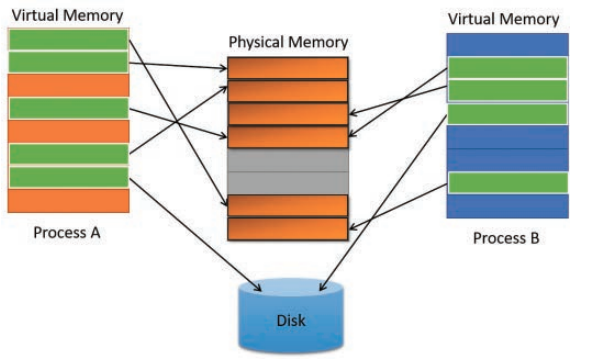
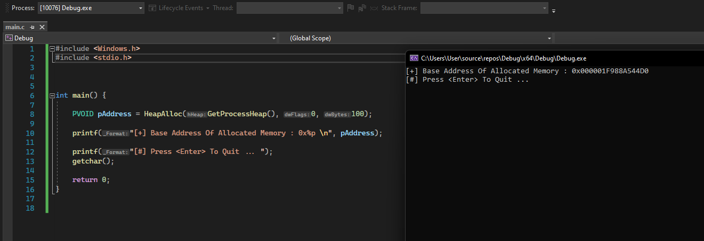
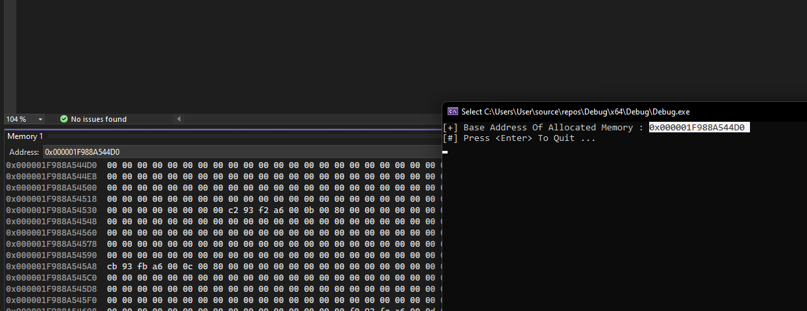
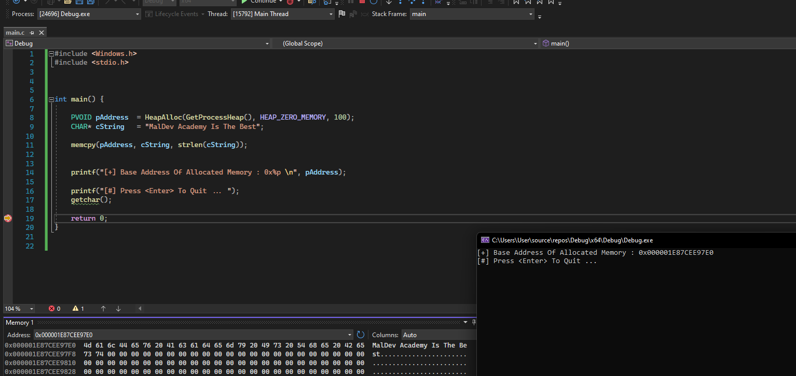
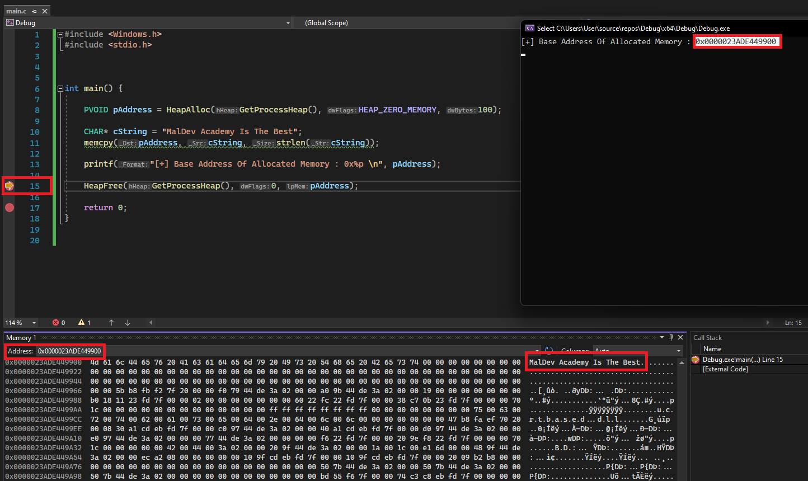
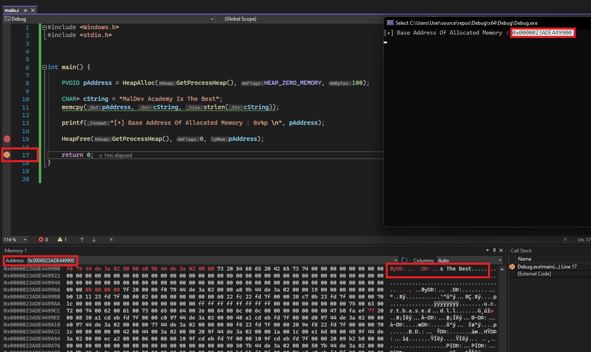

模块 06 - Windows 内存管理
模块 06 - Windows 内存管理
目标
- 使用演示的内存分配函数来分配内存。
- 使用适当的释放函数释放分配的内存缓冲区
- 使用 VirtualAlloc WinAPI 分配内存
- 使用 RtlFillMemory WinAPI 向分配的内存区域写入数据
- 查找其他内存分配函数
- new
- malloc
- LocalAlloc
- HeapAlloc
- GlobalAlloc
- CoTaskMemAlloc
- VirtualAlloc
- VirtualAlloc2
- VirtualAllocEx
- VirtualAllocExNuma
- NtAllocateVirtualMemory
- RtlAllocateHeap
- RtlReAllocateHeap
- ...
介绍
本模块介绍了 Windows 内存的基础知识。理解 Windows 如何处理内存对构建高级恶意软件至关重要。
虚拟内存和分页
在现代操作系统中，内存并不直接映射到物理内存（即 RAM）。相反，进程使用虚拟内存地址，这些地址映射到物理内存地址。这有几个原因，但最终目标是尽可能节省物理内存。虚拟内存可以映射到物理内存，但也可以存储在磁盘上。通过虚拟内存寻址，多个进程可以共享相同的物理地址，同时拥有一个独特的虚拟内存地址。虚拟内存依赖于内存分页的概念，它将内存划分为 4KB 大小的块，称为“页”。
请参见下面来自《Windows Internals 第七版 - 第一部分》的图。

内存页的状态
进程虚拟地址空间中的页面可以处于三种状态之一：
- 空闲 - 页面既未提交也未保留。该页面对进程不可访问。它可被保留、提交或同时保留和提交。尝试从空闲页面读取或写入内容会导致访问异常。
- 已保留 - 此页面已保留以备将来使用。该地址范围不能被其他分配函数使用。该页面不可访问，并且没有与之关联的物理存储。它可以被提交。
- 已提交 - 内存已从 RAM 的总体大小和磁盘上的页面文件中分配。该页面是可访问的，访问由其中一个内存保护常量控制。系统仅在第一次尝试读取或写入该页面时初始化并加载每个已提交页面到物理内存。当进程终止时，系统释放已提交页面的存储。
内存页的保护选项
提交内存页后，需要对其设置保护选项。此处可以找到内存保护常量的列表：单击此处，以下列出一些示例：
PAGE_NOACCESS- 禁用对已提交页面区域的所有访问。尝试读取、写入或执行已提交区域将导致访问冲突。PAGE_EXECUTE_READWRITE- 启用读取、写入和执行。强烈建议不要使用此选项，通常是 IoC，因为内存同时具有可写性和可执行性并不常见。PAGE_READONLY- 启用对已提交页面区域的只读访问。尝试写入已提交区域将导致访问冲突。
内存保护
现代操作系统通常内置内存保护机制，以防止利用漏洞和攻击。在构建或调试恶意软件时，这些也是重要的考虑因素，因为在此过程中可能会遇到它们。
- 数据执行保护 (DEP) - DEP 是从 Windows XP 和 Windows Server 2003 开始内置到操作系统中的系统级内存保护功能。如果页面保护选项设置为 PAGE_READONLY，则 DEP 将防止代码在该内存区域执行。
- 地址空间布局随机化 (ASLR) - ASLR 是一种内存保护技术，用于防止利用内存损坏漏洞。ASLR 随机安排进程关键数据区域的地址空间位置，包括可执行文件的基址以及栈、堆和库的位置。
x86 vs x64 内存空间
在处理 Windows 进程时，要注意进程是 x86 还是 x64。x86 进程的内存空间较小，为 4GB（0xFFFFFFFF），而 x64 拥有更大的内存空间，为 128TB（0xFFFFFFFFFFFFFFFF）。
内存分配示例
此示例通过小代码片段来更好地理解如何通过 C 函数和 Windows API 与 Windows 内存进行交互。与内存交互的第一步是分配内存。下面的代码片段演示了几种分配内存的方法，这本质上是在运行中进程内部预留一块内存。
// 分配一个 100 字节的缓冲区内存
// 方法 1 - 使用 malloc()
PVOID pAddress = malloc(100);
// 方法 2 - 使用 HeapAlloc()
PVOID pAddress = HeapAlloc(GetProcessHeap(), 0, 100);
// 方法 3 - 使用 LocalAlloc()
PVOID pAddress = LocalAlloc(LPTR, 100);
内存分配函数返回的是基地址，它只是指向分配的内存块开头的指针。使用上面的代码片段， pAddress 将是分配的内存块的基地址。使用这个指针可以进行多种操作，例如读取、写入和执行。可以执行的操作类型将取决于分配的内存区域所赋予的保护。
下图显示了在调试器下 pAddress 的样子。

当内存分配时，它可能是空的或包含随机数据。某些内存分配函数提供在分配过程中将内存区域清零的选项。

内存写入示例
内存分配后的下一步通常是向该缓冲区写入数据。可以使用几种选项来写入内存，但在此示例中，使用了 memcpy 。
PVOID pAddress = HeapAlloc(GetProcessHeap(), HEAP_ZERO_MEMORY, 100);
CHAR *cString = "MalDev Academy Is The Best";
memcpy(pAddress, cString, strlen(cString));
HeapAlloc 使用 HEAP_ZERO_MEMORY 标志，这会导致分配的内存被初始化为零。然后使用 memcpy 将字符串复制到分配的内存中。在 memcpy 中的最后一个参数是要复制的字节数。接下来，重新检查缓冲区以验证数据是否成功写入。

释放已分配的内存
当应用程序使用完分配的缓冲区后，强烈建议释放或解除分配该缓冲区，以避免内存泄漏。
根据使用的内存分配函数，将有一个对应的内存释放函数。例如：
- 使用
malloc分配需要使用free函数。 - 使用
HeapAlloc分配需要使用HeapFree函数。 - 使用
LocalAlloc分配需要使用LocalFree函数。
下面的图片显示了 HeapFree 的运行情况，释放了在地址 0000023ADE449900 上分配的内存。请注意，地址 0000023ADE449900 仍然存在于进程中，但其原始内容已被随机数据覆盖。这些新数据很可能是由于操作系统在进程内部执行的新分配造成的。

